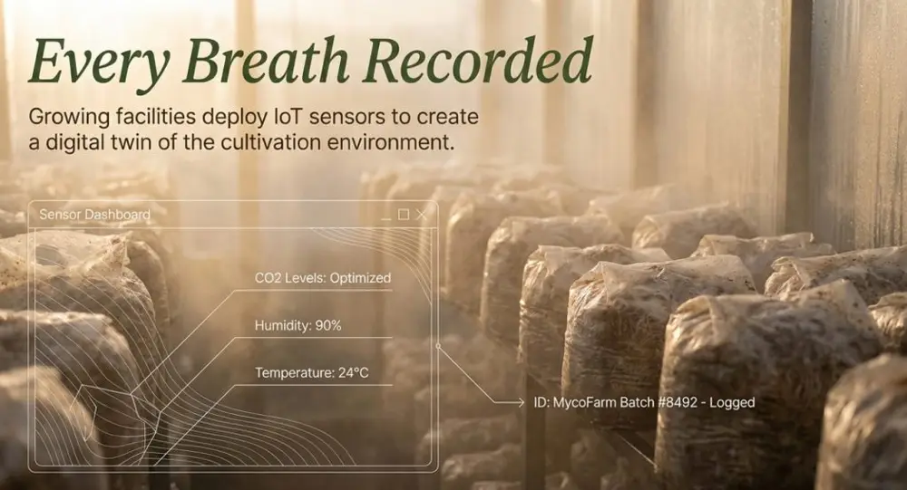
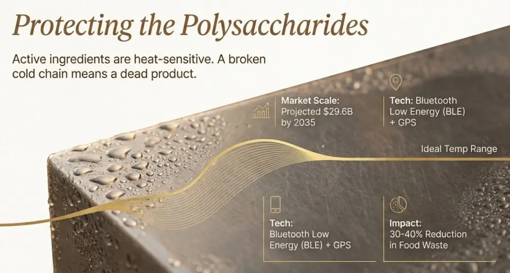
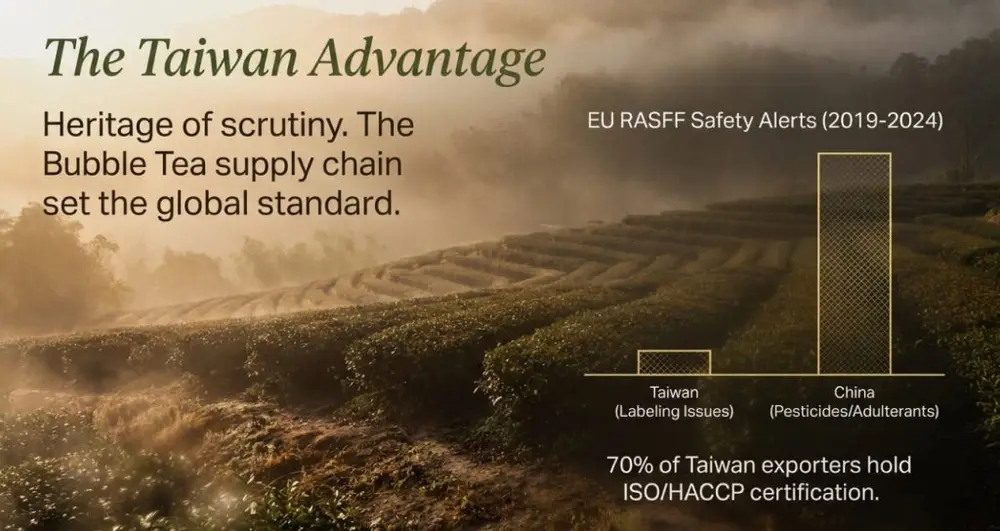

Articles / Tips & trends
Supply Chain Transparency: Tracking Mushroom Extracts from Farm to Cup
2026-01-13 · Sourcing, Sourcing
Blockchain and IoT sensors are transforming traceability in the mushroom extract supply chain. The global IoT cold chain monitoring market reached USD 8 billion in 2025 and is projected to hit USD 29.6 billion by 2035, according to Future Market Insights. Research from Frontiers in Blockchain shows that organic food supply chains using blockchain technology reduced trace-back time from days to seconds. This article explains the key tracking technologies, quality control checkpoints, and how beverage manufacturers can verify ingredient safety through transparent supply systems.
Why Mushroom Extracts Demand Rigorous Supply Chain Tracking
Mushrooms act as bioaccumulators, absorbing heavy metals and pesticides from their growing environment. Laboratory testing by Scout Scientific revealed that lead, arsenic, cadmium, and mercury levels in commercial lion’s mane extract powders varied by up to 3x across different vendors. Mushroom Wisdom research indicates that when grown on contaminated substrates, mushroom heavy metal concentrations can amplify 5-10 times during the extraction and concentration process.
Supply chain vulnerabilities create specific risks:
| Risk Category | Impact Scope | Detection Complexity |
|---|---|---|
| Substrate contamination | Heavy metal accumulation | Requires specialized lab testing |
| Pesticide residues | 50+ compounds potentially exceeding limits | Needs GC-MS/MS equipment |
| Species misidentification | Insufficient active compounds | Requires PCR molecular identification |
| Extraction solvent residue | Food safety concerns | Needs HPLC detection |
The Pure Mushroom Initiative notes that products meeting SUPER Organic 572 certification standards undergo testing for 474 pesticides, 34 metals, plasticizers, and microbial contamination—far exceeding routine organic certification requirements.
How Blockchain Tracks Mushroom Extracts Throughout Their Journey
Blockchain technology uses an immutable distributed ledger to record every stage of mushroom extract production, from cultivation through packaging. A systematic literature review in Applied Sciences analyzed 60 blockchain food supply chain frameworks, identifying transparency, traceability, and security as the three core drivers.
Cultivation Stage Tracking
Growing facilities deploy IoT sensors to record temperature, humidity, and CO2 levels during cultivation. MycoFarm assigns unique identifiers to each batch, logging growth conditions, harvest dates, and transport details. Consumers can scan QR codes to access complete cultivation information.
Processing and Extraction Monitoring
Processing facilities record extraction parameters (temperature, duration, solvent type) on-chain to ensure process consistency. Mushroom Supply Co. uses blockchain to track mushrooms through the supply chain. When recalls become necessary, the system pinpoints affected batches within hours and notifies retailers and consumers.
Quality Testing Data on Chain
Third-party laboratory results (beta-glucan content, heavy metals, pesticide residues) automatically upload via smart contracts. Nammex’s quality control system includes heavy metals analysis, pesticide testing exceeding USP standards, beta-glucan testing for active compounds, ergosterol testing for fungal purity, and alpha-glucan testing to guard against adulterants.
| Testing Category | Standard Method | On-Chain Timing |
|---|---|---|
| Beta-glucan content | Megazyme test kit | After extraction completion |
| Heavy metals (4 items) | ICP-MS | Every batch |
| Pesticide residues (72 types) | GC-MS/MS | Raw materials and finished goods |
| Microbial contamination | Culture count | Pre-packaging |
Logistics and Cold Chain Monitoring
IoT temperature sensors track temperature variations during transport. Berg Insight reports that global remote tracking systems for refrigerated cargo reached 725,000 units in 2022, projected to hit 1.2 million by 2027. When temperatures deviate from set ranges, systems automatically alert logistics personnel to take corrective action.


How IoT Sensors Ensure Transport Quality for Mushroom Extracts
Active ingredients in functional mushroom extracts—polysaccharides and triterpenes—are sensitive to temperature and humidity. IoT cold chain monitoring systems use wireless sensors, GPS trackers, and cloud platforms to provide real-time or recorded temperature data.
Real-Time Monitoring Architecture
Bluetooth Low Energy (BLE) sensors and Wi-Fi devices ensure seamless data transmission. Digital Matter’s cold chain temperature monitoring devices offer battery life up to 10 years, supporting global LTE-M/NB-IoT and 4G LTE Cat1bis connectivity. Sensors monitor temperature, humidity, light exposure, and vibration.
Predictive Analytics and Preventive Maintenance
IoT data can predict equipment failures. When a refrigerated truck’s cooling unit begins failing, sensors alert both the driver and central management system, prompting repair or cargo transfer to another vehicle. FoodSafetyTech reports that IoT predictive maintenance reduces food waste by 30-40%.
End-to-End Visibility
GPS trackers enable companies to monitor shipment locations in real time. Morpheus Network research shows the cold chain market reached USD 271 billion in 2023, with projected CAGR of 18.9% from 2024-2030. Enhanced visibility improves coordination and response times, particularly when rerouting becomes necessary due to delays.
| Monitoring Level | Technology Tool | Data Update Frequency |
|---|---|---|
| Batch level | RFID tags | Each scan |
| Container level | Temperature data loggers | Every 5-15 minutes |
| Vehicle level | GPS + temperature sensors | Real-time |
| Warehouse level | Smart HVAC systems | Continuous monitoring |


Taiwan Bubble Tea Ingredient Supply Chain Transparency Advantages
Taiwan, as the birthplace of bubble tea, has established rigorous standards for ingredient supply chain transparency. SGS Taiwan data shows that over 70% of Taiwan’s food exporters hold ISO/HACCP certification, making the supply chain more transparent and reliable.
Certification System Completeness
Taiwanese suppliers typically provide complete compliance documentation required by international markets, including HACCP, ISO 22000, FSSC 22000, Halal, and Kosher certifications. Third-party supply chain assessments (2022-2024) show Taiwanese suppliers outperform Chinese counterparts by 30-45% in documentation quality and product consistency.
Food Safety Reporting Transparency
According to Taiwan Food and Drug Administration (TFDA) data, over 90% of food safety violations are publicly disclosed in real time, allowing importers to quickly assess risk. In contrast, China’s decentralized reporting system results in varying transparency levels across provinces.
EU RASFF (Rapid Alert System for Food & Feed) statistics from 2019-2024 show:
- China recorded 5-7x more food safety alerts than Taiwan
- Common Chinese issues include excessive preservatives, pesticide residues, undeclared additives, or industrial-grade adulterants
- Taiwan alerts were primarily labeling-related, not safety concerns
Taiwan Good Agricultural Practice (TGAP) Traceability System
Producers following TGAP log and produce goods according to standards. After obtaining certification, they can display the traceability system mark. Consumers enter the code from the mark on the website to view everything from manufacturing to shipping online. This traceability network ensures product safety from production line to dining table.


How Beverage Brands Verify Mushroom Extract Supplier Transparency
When sourcing functional mushroom extracts, beverage brands should require suppliers to provide complete traceability documentation and third-party testing reports. Key verification points include:
Request Batch-Specific COA (Certificate of Analysis)
Each batch should include independent testing reports covering:
- Beta-glucan content (active ingredient standard)
- Heavy metals testing for 4 items (lead, arsenic, cadmium, mercury)
- Multi-residue pesticide analysis (minimum 50 compounds)
- Microbial testing (coliforms, salmonella, mold)
- Extraction solvent residue testing (if applicable)
Verify Cultivation Source Information
Request environmental control records from growing facilities, substrate source documentation, and organic certification (if claimed). Mushroom Revival notes that organic certification doesn’t guarantee pesticide-free products, as pesticides from neighboring fields may drift. USP-standard testing for 72 pesticides remains necessary.
Validate Blockchain Traceability Systems
If suppliers claim blockchain traceability, request queryable QR codes or batch numbers to verify information completeness. According to ScienceDirect research, effective blockchain traceability systems require robust infrastructure, cutting-edge technology, and significant upfront investment.
Assess Supplier Transparency Willingness
Suppliers willing to disclose process parameters, accept facility audits, and provide customer visits typically demonstrate greater confidence in quality control. Frontiers in Blockchain case studies indicate that in organic food supply chains, successful blockchain implementation at small scale hinges on two key decisions:
- Optimizing supply chain partner collaboration
- Selecting which data to capture on blockchain
From Laboratory Testing to Shelf: The Final Mile
Even when ingredients pass all testing, final product quality depends on beverage manufacturers’ operational controls. When adding mushroom extracts to beverages, consider these points:
Extract Storage Conditions
Most functional mushroom extract powders should be stored in cool, dry places away from direct sunlight. After opening, seal tightly to prevent moisture absorption and clumping. Liquid extracts require refrigeration and prompt use after opening.
Formula Compatibility Testing
Polysaccharides and proteins in mushroom extracts may interact with specific ingredients. Conduct small-scale formula tests to confirm solubility, stability, and flavor compatibility before scaling to production.
Labeling Regulatory Compliance
Different markets have significantly varying regulations for functional claims. The EU requires functional food claims approved by EFSA, while the US FDA requires compliance with the Dietary Supplement Health and Education Act (DSHEA). Taiwan requires ingredient and content labeling per the Food Safety and Health Management Act.
Cited Sources
- Cornell University Food Science Department
- World Economic Forum – Blockchain in Food Supply Chain
- ScienceDirect – Blockchain Technology in Supply Chain Traceability
- Applied Sciences – Blockchain-Driven Food Supply Chains
- Future Market Insights – IoT for Cold Chain Monitoring Market
- Frontiers in Blockchain – Organic Food Traceability Case Studies
Frequently Asked Questions
Initial setup costs are substantial, including hardware equipment, software development, and staff training. According to ScienceDirect research, successful implementation requires robust infrastructure and significant investment. However, long-term benefits include reduced quality dispute resolution costs, faster recall efficiency, and enhanced brand trust. Mid-sized suppliers can consider joining existing blockchain platforms to share setup costs.
World Economic Forum research shows that millennial and Gen Z consumers demonstrate significantly increased demand for product origin transparency. In the functional beverage market, 35-40% of consumers are willing to pay a premium for traceable products. Brands can increase consumer awareness and usage of traceability systems through marketing education.
Taiwan bubble tea ingredient suppliers have established complete HACCP and ISO certification systems. When integrating mushroom extracts, they can extend existing quality management processes. The key is requiring mushroom suppliers to provide testing reports meeting international standards and incorporating them into product specifications. Customization services can help develop innovative beverage formulas containing mushroom extracts while ensuring supply chain transparency.
Genuine blockchain traceability systems should provide verifiable query interfaces allowing buyers to view real-time cultivation, processing, testing, and logistics records. Request specific batch blockchain records from suppliers and check data completeness and timestamp consistency. If suppliers cannot provide queryable systems and only verbally claim blockchain use, carefully assess authenticity.
While dry powders are less temperature-sensitive than liquid extracts, high temperatures can still accelerate active ingredient degradation and moisture-related clumping. IoT monitoring ensures transport temperatures stay within recommended ranges (typically below 25°C), particularly important for summer shipping or tropical country imports. Additionally, humidity monitoring prevents product deterioration from packaging seal issues.
Author: Michael Zhang, Yenchuan Product Development Manager
From growing facilities to consumer beverages, mushroom extracts travel through complex supply chains. Transparency isn’t just a compliance requirement—it’s the cornerstone of quality assurance. The integration of blockchain and IoT technology makes “visible peace of mind” possible. Taiwan’s leading position in supply chain transparency as a global bubble tea ingredient hub sets new standards for the functional beverage market. Looking ahead, consumers will increasingly value complete product histories over surface-level marketing claims. Suppliers who establish transparent traceability systems early will gain critical competitive advantages.
If you’d like to explore supply chain management solutions for functional ingredients, contact the Yenchuan team to discuss the transparency strategy best suited to your business.